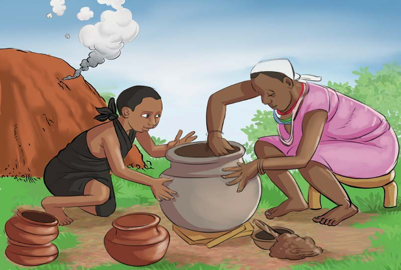
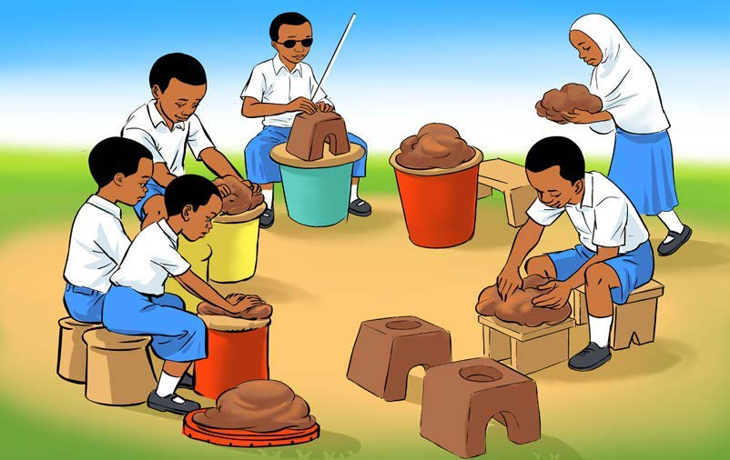

Ufinyanzi
Ufinyanzi ni kazi ya mikono ambayo hufanyika kwa kutumia udongo wa mfinyanzi. Baadhi ya vitu vinavyotengenezwa kwa kufinyanga ni vyungu, vikombe na sahani.
Chunguza picha hizi, kisha jibu maswali yanayofuata:


Maswali
2. Vitu vinavyohitajika katika kufanya kazi hiyo ya sanaa ni na .
Shughuli ya tatu
Tumia udongo kufinyanga kitu unachokipenda.